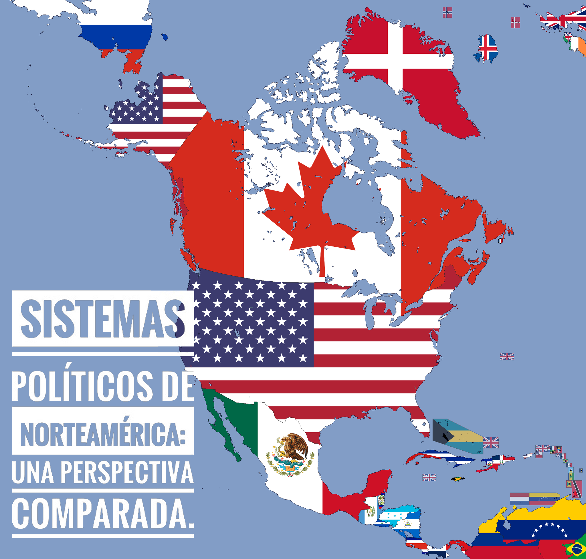

Universidad Veracruzana
Sistemas políticos de Norteamérica
Fase 2: Los elementos de los sistemas políticos en Estados Unidos, México y Canadá.

Sistemas políticos de Norteamérica
Fase 2: Los elementos de los sistemas políticos en Estados Unidos, México y Canadá.
Sistemas políticos de NorteaméricaScroll
Fase 2: Los elementos de los sistemas políticos en Estados Unidos, México y Canadá.
Información general
Situación problematizadora
|
El enfoque comparado en el estudio de los sistemas políticos tiene un fuerte componente empírico. Desde las primeras reflexiones filosóficas sobre “el buen gobierno” y la política, Aristóteles empleaba la observación sobre las formas de gobierno entre las diferentes ciudades-estado griegas y comparaba lo que, para él, eran los tipos ideales de gobierno. Para hacer esto se requiere comprender a los regímenes políticos como sistemas, es decir, como organismos que poseen ciertos componentes o elementos que nos describen cómo son. Esta fase tiene como propósito identificar, analizar y comprender cuáles son los elementos de los sistemas políticos en los tres países de Norteamérica, desde una perspectiva histórica y empírica, con el fin de reconocer sus semejanzas, pero también sus diferencias. |

[1] |
Desarrollo de los saberes de la Experiencia Educativa
El sistema político de los Estados Unidos se basa en dos pilares fundamentales: la democracia representativa y el federalismo. Esto significa, por un lado, que las autoridades que ejercen funciones dentro de los poderes públicos son elegidas mediante procedimientos de elección directa o indirecta, a los que son convocados los ciudadanos de ese país en determinados periodos. Por otro lado, el régimen federal establece una serie de atribuciones, competencias y potestades para los Estados que son libres y soberanos, que se reservan algunas facultades para sí y otras las ceden al gobierno nacional o federal (por ejemplo, las fuerzas armadas, la impresión de moneda única, la representación en el exterior, etcétera). Todo el sistema político tiene su fundamento en la Constitución de los Estados Unidos, que establece la estructura y los poderes del gobierno federal, las competencias de los Estados de la Unión y garantiza los derechos individuales y las libertades fundamentales de los ciudadanos. Este sistema político ha evolucionado a lo largo de los años y ha sido influenciado por diversos factores, incluyendo su historia, su constitución y su cultura política.
El sistema político de los Estados Unidos se basa en el principio de separación de poderes y checks and balances (pesos y contrapesos). El gobierno federal se divide en tres ámbitos: Legislativo, Ejecutivo y Judicial. Cada uno de estos poderes tiene funciones específicas y sirve como un mecanismo de control y equilibrio para evitar la concentración excesiva de poder. Este mismo modelo se reproduce a nivel subnacional en los Estados de la Unión, y a nivel local en los condados o municipios.
El sistema político de los Estados Unidos nace con la Declaración de Independencia de las 13 colonias británicas de 1776 y, posteriormente, queda establecido en la Constitución federal de 1787. Estos documentos sentaron las bases para un gobierno democrático y establecieron los principios de la separación de poderes y los derechos individuales. La Guerra de Independencia y el proceso de construcción del país influyeron en la configuración del sistema político actual.
Para aprender un poco más sobre la historia de Estados Unidos y su régimen político, observe el
siguiente video.
El Poder Legislativo está compuesto por el Congreso de los Estados Unidos, que se divide en dos cámaras: el Senado y la Cámara de Representantes. El Senado está formado por dos senadores por cada Estado, es decir, 100 en total, que sirven por un periodo de seis años. La Cámara de Representantes se compone de 435 miembros, que sirven por un período de dos años. El número de Representantes por cada Estado se basa en la población del mismo. De ahí que se afirme que el Senado representa a los Estados, mientras que la otra cámara representa al pueblo. El Congreso es responsable de aprobar leyes, representar los intereses de los ciudadanos y ejercer la supervisión sobre el Poder Ejecutivo. La reelección de representantes y Senadores es indefinida, lo que significa que pueden permanecer en el cargo tantas veces y por tantos años como logren obtener la mayoría de votos de sus electores.>
Para leer la información completa, haga clic en la flecha de la derecha.

|
El Poder Ejecutivo está encabezado por el presidente de los Estados Unidos, quien es elegido mediante voto popular indirecto para un mandato de cuatro años. Puede ser reelecto por una sola ocasión consecutiva para un periodo similar. El presidente es el jefe de Estado y de gobierno, y tiene la responsabilidad de ejecutar las leyes y dirigir la política exterior del país. El vicepresidente apoya al presidente y asume sus funciones en caso de ausencia o incapacidad. |
Está encabezado por la Corte Suprema de los Estados Unidos, que es el tribunal más alto del país. La Corte Suprema tiene la autoridad para interpretar la Constitución y revisar la constitucionalidad de las leyes. Además de la Corte Suprema, hay tribunales federales y estatales que se encargan de administrar la justicia en diferentes niveles.
Ahora, lea y analice el texto Sistemas políticos y electorales contemporáneos: Estados Unidos,
capítulo 1.

Para recapitular el estudio histórico del sistema político de Estados Unidos y la conformación de los tres poderes públicos, le invito a revisar la siguiente presentación. Para visualizar toda la información, haga clic en la flecha de la derecha.
El sistema electoral de los Estados Unidos se basa en el voto popular indirecto. Los ciudadanos eligen al presidente mediante un sistema de colegios electorales. En cuanto a los partidos políticos, existen dos dominantes: Demócrata y Republicano. Estos partidos compiten en las elecciones y representan diferentes ideologías y plataformas políticas. También existen partidos minoritarios y candidatos independientes que participan en el proceso electoral. Mención especial merece la elección del Presidente y del Vicepresidente de Estados Unidos que se lleva a cabo a través de un proceso electoral indirecto, es decir, los ciudadanos no eligen directamente al candidato que se postula para dichos cargos, sino a un número de personas que conformarán por cada Estado de la Unión, el Colegio Electoral.
Para conocer más al respecto, revise el siguiente video sobre Cómo funciona el colegio electoral de
EU.
Ahora, lea el Capítulo 2 del texto Sistemas políticos y electorales contemporáneos. Para ello, haga clic en el siguiente icono.
Respecto del sistema de partidos políticos, Estados Unidos tiene un modelo bipartidista, lo que significa que hay dos partidos políticos dominantes, el Partido Demócrata y el Partido Republicano, con un control significativo sobre el panorama político y electoral. Esta predominancia de sólo dos fuerzas políticas obedece a varios factores, pero sin duda el que más peso tiene es el diseño de su sistema electoral basado en la regla de la mayoría y la negación de la representación proporcional. Esto significa que el partido que obtiene la mayoría de los votos en una elección se queda con toda la representación política y los votos de los partidos que no ganan, se pierden. Aunque existen otros partidos políticos más pequeños, como el Partido Libertario y el Partido Verde, pero su influencia y representación son limitadas en comparación con los ya mencionados.
Para entender el desarrollo y evolución del sistema de partidos en Estados Unidos, revise el Capítulo 3 del texto Sistemas políticos y electorales contemporáneos: Estados Unidos. Para ello, haga clic en el siguiente icono.
El sistema político de los Estados Unidos se basa en un modelo federal, lo que significa que el poder se divide entre el gobierno federal y los gobiernos estatales. Cada Estado tiene su propio gobierno, mismo que está compuesto por tres ramas: el Ejecutivo, el Legislativo y el Judicial.
Para conocer cómo está encabezada cada una de las ramas, revise la siguiente infografía.
En cuanto a su organización política interna, los estados cuentan con una subdivisión territorial en condados. Éstos son unidades administrativas locales que tienen autoridad y autonomía dentro del Estado. Cada condado tiene su propia estructura de gobierno local, encabezada por una junta de comisionados o Consejo de condado, que es responsable de tomar decisiones y administrar los asuntos locales. Los condados también tienen funcionarios electos, como el Sheriff, el Procurador y el Tesorero, entre otros. Además de los condados, existen subdivisiones más pequeñas a nivel local, como municipios o parroquias, dependiendo de la terminología utilizada en cada Estado. Estos municipios o parroquias varían en tamaño y función e incluyen ciudades, pueblos, aldeas o áreas rurales. Cada municipio o parroquia tiene su propia estructura de gobierno local, que puede estar encabezada por un alcalde, un consejo municipal o una junta de gobierno. La organización política interna en los estados federales de Estados Unidos, con la subdivisión en condados, municipios o parroquias, permite una descentralización del poder y una mayor participación ciudadana a nivel local.
Para aprender más acerca de esta distribución territorial del poder político en Estados Unidos,
revise el siguiente video:
El sistema político de Canadá es una democracia parlamentaria y una monarquía constitucional, lo que significa que el país tiene una forma de gobierno parlamentario con un monarca como jefe de Estado y un primer ministro como jefe de Gobierno. Es decir, un Poder Ejecutivo bicéfalo (de dos cabezas). Todo el andamiaje político canadiense se fundamenta en una Constitución (o mejor dicho en un conjunto de leyes indispensables, denominadas Constitución de Canadá), que establece la estructura del gobierno y garantiza los derechos y libertades de los ciudadanos y la unión de las diferentes provincias y territorios, bajo la forma de federación.
Antecedentes históricos de Canadá
La historia de Canadá se remonta a miles de años, con la presencia de pueblos indígenas que habitaron el territorio mucho antes de la llegada de los europeos. Sin embargo, en este contexto, nos centraremos principalmente en los antecedentes históricos que llevaron a la formación de la nación canadiense moderna. La exploración y colonización europea de Canadá comenzó en el siglo XV con los viajes de exploración de los navegantes europeos, principalmente de los vikingos nórdicos y, posteriormente, de los exploradores británicos y franceses. La expedición de John Cabot, en 1497, marcó uno de los primeros contactos europeos en el continente norteamericano.
En el siglo XVI, Francia fundó una serie de asentamientos y colonias en lo que hoy es Canadá, particularmente en las regiones de Quebec y Acadia. Estas colonias fueron conocidas como Nueva Francia y estaban bajo el control de la Corona francesa. Durante este período, se establecieron relaciones comerciales con los pueblos indígenas y se desarrolló una economía basada en la pesca, la caza y el comercio de pieles. En el siglo XVIII, la rivalidad entre Francia y Gran Bretaña en Europa se extendió a sus colonias en América del Norte. Durante la Guerra de los Siete Años (1756-1763), conocida como la Guerra Franco-Indígena en América del Norte, Gran Bretaña logró la victoria y obtuvo el control de Nueva Francia. Bajo los términos del Tratado de París de 1763, Francia cedió la mayor parte de sus posesiones en América del Norte a Gran Bretaña. Después de la conquista británica, Gran Bretaña enfrentó el desafío de gobernar un territorio vasto y diverso. Con la llegada de colonos leales a la Corona, así como de inmigrantes de diversas partes de Europa, la población de Canadá creció rápidamente. Para administrar el territorio, se implementaron medidas como la Ley de Quebec, en 1774, que otorgaba ciertos derechos y garantías a los francófonos y católicos en esa provincia.
En 1867, se llevó a cabo un evento crucial para la historia de Canadá con la aprobación de la Ley de la Mancomunidad de Canadá, también conocida como la Ley Constitucional de 1867. Esta ley unió a las provincias de Ontario, Quebec, Nuevo Brunswick y Nueva Escocia en una federación llamada Canadá. El objetivo de esta federación era fortalecer el control y la gobernanza de los territorios británicos en América del Norte, y establecer un sistema político que pudiera representar las diversas identidades y culturas de la población canadiense. Posteriormente, otras provincias y territorios se unieron a Canadá, incluyendo Manitoba, en 1870; Columbia Británica, en 1871; Isla del Príncipe Eduardo, en 1873; Saskatchewan y Alberta, en 1905; y Terranova y Labrador, en 1949. Estos eventos marcaron la expansión y consolidación del territorio canadiense.
Para conocer más de la historia de Canadá, revise el siguiente video
El Poder Legislativo en Canadá recae en el Parlamento, mismo que está compuesto por dos cámaras: la Cámara de los Comunes y el Senado. La Cámara de los Comunes es la cámara baja y está formada por representantes elegidos directamente en elecciones generales. El Senado es la cámara alta y sus miembros son nombrados por el Gobernador general, por recomendación del Primer Ministro. El Parlamento tiene la responsabilidad de aprobar leyes, supervisar y controlar al gobierno. Del Parlamento emana el gobierno a tal grado que tanto el Legislativo como el Ejecutivo se funden en una sola entidad política. Por esta razón se sostiene que el régimen parlamentario se basa en el principio de colaboración entre poderes, más que en la separación de los mismos.
Para leer la información de cada Poder, haga clic en el apartado correspondiente.
|
[3] |

[4] |
| 2.2.2 El Poder Ejecutivo: Primer ministro y gabinete | 2.2.3 El Poder Judicial |
Para aprender más acerca del sistema político de Canadá, haga clic en el siguiente icono.
En Canadá, el sistema electoral se basa en un sistema de representación proporcional y de circunscripciones uninominales. El país está dividido en distritos electorales, y los ciudadanos eligen a un representante para cada distrito en las elecciones generales. El partido político con la mayoría de los escaños en la Cámara de los Comunes forma el gobierno, mientras que los otros partidos ocupan la oposición. Los partidos políticos desempeñan un papel fundamental en el sistema político canadiense. Los dos principales partidos son el Partido Liberal y el Partido Conservador. El Partido Liberal ha tenido un mayor dominio histórico, pero en las últimas décadas, el Partido Conservador ha ganado fuerza. Además de estos dos partidos, también existen otros muy significativos, como el Nuevo Partido Democrático (NDP), el Bloque Québécois (BQ) y el Partido Verde. Estos partidos representan una diversidad de ideologías y tienen presencia en diferentes regiones del país.
A continuación, conozca más al respecto, en los capítulos 2 y 3 del texto de Aguirre (2001). Para acceder a la información, haga clic en el siguiente icono.
El sistema político de México es una combinación de elementos democráticos y autoritarios que ha evolucionado a lo largo de su historia. México es una república democrática, representativa y federal. Su estructura política ha evolucionado a lo largo de la historia, influenciada por diversos acontecimientos y transformaciones sociopolíticas.
Los orígenes del sistema político mexicano se remontan a la época colonial, para efectos de este curso se establece un corte temporal a partir de la década de 1930, porque en este periodo se sientan las bases de lo que será el modelo autoritario hegemónico que se articula en torno a dos ejes: el presidente de la República (como jefe político de las instituciones nacionales) y el Partido Revolucionario Institucional (como instrumento político de reparto del poder entre las élites políticas). Bajo este modelo, articulado en estas dos figuras, se gobernó al país durante más de 70 años.
Para conocer más sobre este aspecto, revise la siguiente presentación. Para visualizar todo el contenido, haga clic en la flecha de la derecha.
Ahora, observe el video Sistema político mexicano.
Para consultar la información referente a los tres poderes, haga clic sobre el nombre de cada uno y
lea con atención.
|
2.3.1 El régimen presidencial mexicano. El Poder Ejecutivo |
2.3.2 El Poder Legislativo federal |
2.3.3 El Poder Judicial federal |
El sistema electoral de México se rige por el principio de sufragio universal, directo, libre y secreto. El Instituto Nacional Electoral (INE) es el organismo encargado de organizar y supervisar las elecciones en el país. El sistema electoral mexicano ha experimentado reformas significativas en las últimas décadas para fortalecer la transparencia y la equidad en los procesos electorales. La introducción de candidaturas independientes, la regulación del financiamiento político y la implementación de mecanismos de fiscalización son algunos ejemplos de las reformas implementadas para fortalecer la democracia en México.
Entre las características principales del sistema electoral mexicano se encuentran tres, para
conocerlas revise el siguiente mapa conceptual.
Por otra parte, el sistema de partidos políticos es pluralista extremo o pluralista polarizado, lo que significa que existen múltiples partidos compitiendo por el poder. Algunos de los partidos políticos más importantes son: Partido Revolucionario Institucional (PRI), que durante gran parte del siglo XX fue el partido dominante, gobernando el país durante más de 70 años; Partido Acción Nacional (PAN), fundado en 1939, que se ha consolidado como uno de los principales partidos, pues ha tenido periodos de gobierno a nivel federal y estatal, y se autodenomina como un partido de centro-derecha; Movimiento Regeneración Nacional (Morena), fundado en 2014 por Andrés Manuel López Obrador, quien se convirtió en Presidente de México en 2018. Morena se presenta como un partido progresista y ha ganado una presencia significativa en el escenario político mexicano. Existen otros partidos políticos más pequeños que también participan en las elecciones y pueden obtener representación en el Congreso y en los gobiernos estatales y municipales, como el PRD, el Partido del Trabajo, el Partido Verde, Movimiento Ciudadano, etcétera.
Para leer la información completa, haga clic en la fecha de la derecha.

[5] |
El federalismo mexicano es un elemento fundamental en la organización política del país. Se basa en la división y distribución de poderes entre el gobierno federal, los Estados y los municipios. A través del federalismo, se busca fortalecer la autonomía y participación de las entidades subnacionales en la toma de decisiones y en la gestión de asuntos locales. Los Estados en México son las entidades federativas que conforman la República. Cada Estado tiene su Constitución y cuenta con un gobierno propio, ejercido por un gobernador, un Congreso estatal y un poder judicial de competencia estatal. |
Evidencias de desempeño
Fuentes de información
1 Uzra Khan (18 de noviembre, 2015). Link between words used by Congress and public-approval ratings. [Imagen]. The Journalist’s Resource. https://journalistsresource.org/politics- and-government/congress-low-public-approval-level/. Redacción Entre Noticias (28 de enero, 2021). Fraude millonario de diputados a través de empresas fantasma en sexenio de Peña Nieto: El País. [Imagen]. Rubén Luengas. https://rubenluengas.com/2021/01/fraude-millonario-de- diputados-a-traves-de-empresas-fantasma-en-sexenio-de-pena- nieto-el-pais/. Tony Webster (28 de julio, 2014). Senate Chamber, Canadian Parliament Centre Block. [Imagen]. Flickr. https://www.flickr.com/photos/87296837@N00/14766295932
2 Cookie030307 (14 de septiembre, 2022). Flag Map of North America.png. [Imagen]. Wikimedia Commons. https://commons.wikimedia.org/wiki/File:Flag_Map_of_North_ America.png
3 <a href="https://www.flaticon.es/iconos-gratis/parlamento" title="parlamento iconos">Parlamento iconos creados por Freepik - Flaticon</a>. https://www.flaticon.es/icono-gratis/capitolio_6045348
4 <a href="https://www.flaticon.es/iconos-gratis/judicial" title="judicial iconos">Judicial iconos creados por Satawat Anukul - Flaticon</a>. https://www.flaticon.es/icono-gratis/escala-de- justicia_4573811
5 2friendsfx (3 de junio, 2020). Mapa tierra. [Imagen]. Pixabay. https://pixabay.com/es/photos/cl%C3%A1sico-globo-mapa- tierra-mundo-5256110/